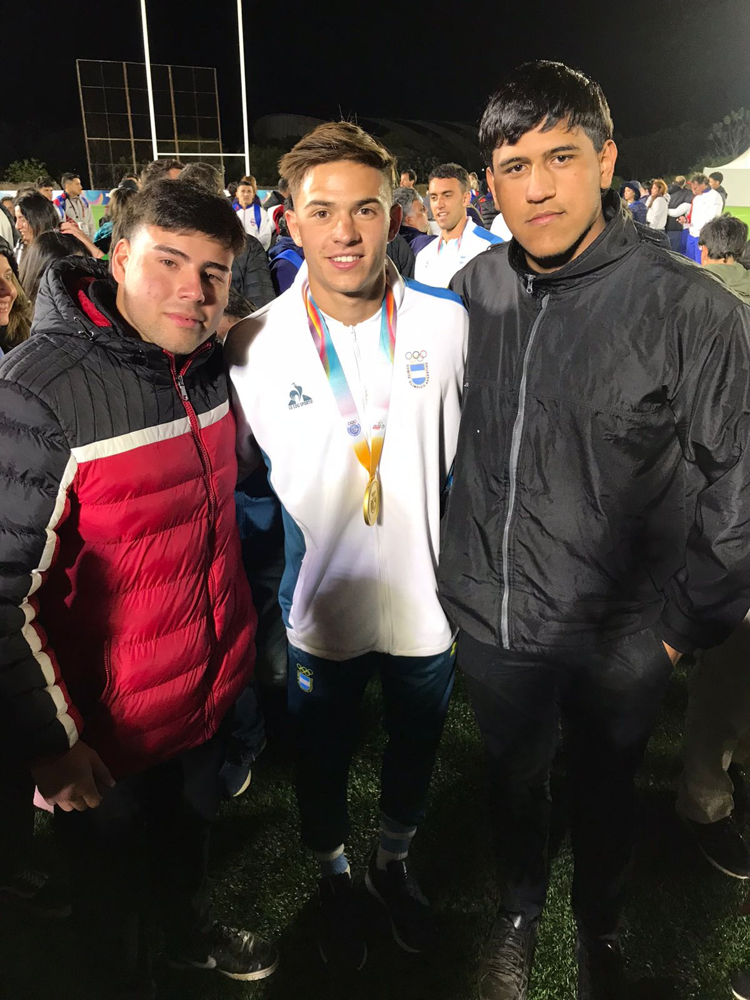
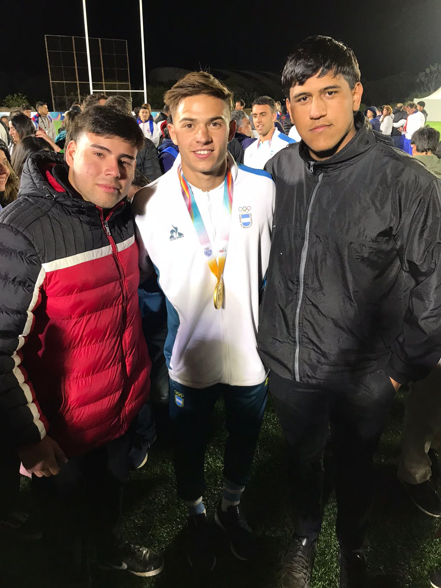

Hola mi nombre es Maximiliano Pietkiewicz, tengo 19 años de edad,
vivo en
Formosa Capital - Argentina
con mis padres y hermanos. Actualmente estoy cursando la carrera
de técnico en
desarrollo de software
multiplataforma en el
Instituto Politécnico de Formosa, fui a la primaria en la E.P.E.P N°446 "Armando de vita y
lacerra" y la secundaria en la E.P.E.S N°35 "Dr. Arturo
Jauretche". Con respecto a mi vida social, me gusta pasar el
tiempo con mis amigos, ver partidos de rugby, futbol y tambien
jugarlos con ellos. Mi hobby principal es jugar al rugby, lo
práctico desde los 14 años en el
Club Caza y Pesca de formosa, gracias a eso pude conocer muchas personas buenas y lugares de
diferentes provincias. Me considero un chico diciplinado y
constante con buenos valores.
¿Qué me gustaria hacer despues de graduarme?
Pues, me gustaría poder encontrar un trabajo estable o seguir
aprendiendo sobre este ámbito.
 
